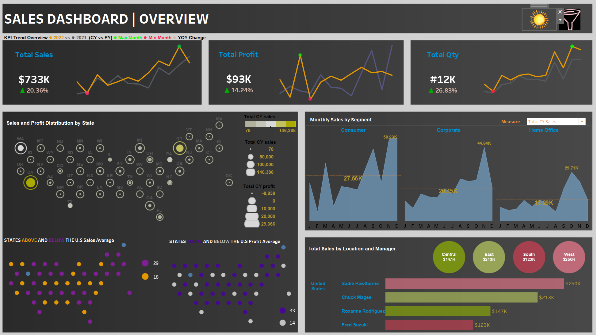
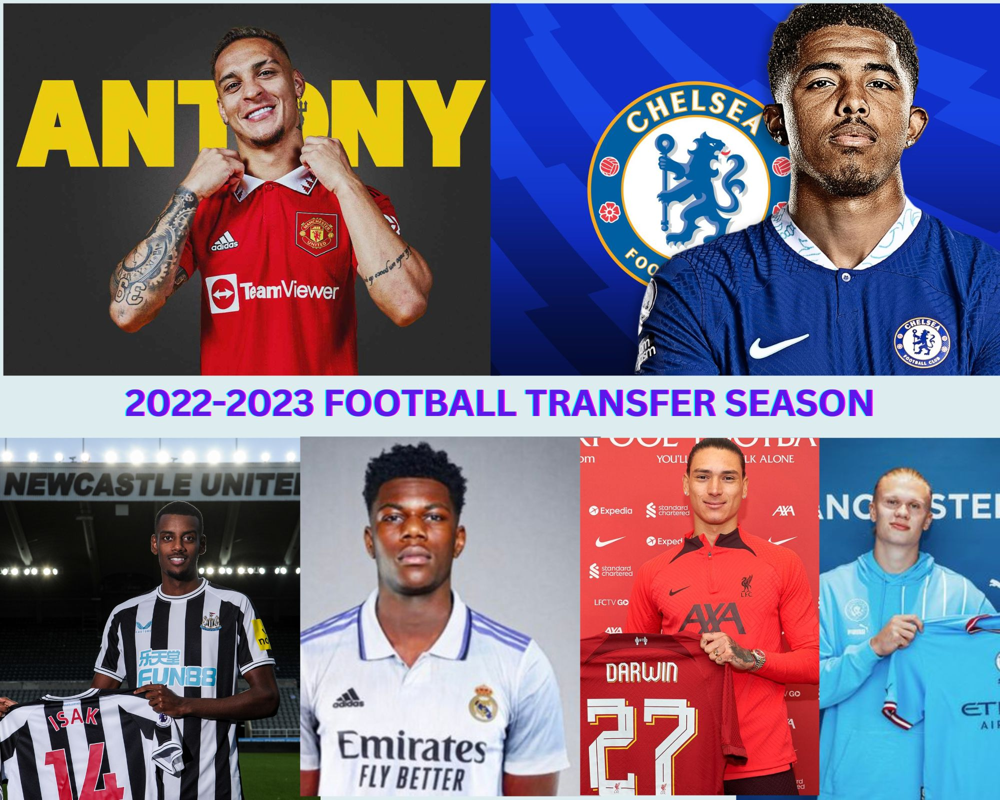

Utilizing linear regression in Python, this project analyzes customer demographics and buying behavior to identify profitable customers.
Actionable insights drive targeted actions for response, retention, and growth optimization.
Performed data wrangling using python libraries such as Numpy, Pandas, Seaborn, matplotlib to access and clean the dataset.

I performed the role of a database tester in this project where I queried the database to perform data validation on an excel dashboard.

This interactive dashboard provides valuable insights into the sales performance of a company, allowing users to make data-driven decisions. The dashboard showcases various key metrics and visualizations to help understand sales trends, profitability, and regional performance. Let's dive into the features and functionalities of this dashboard.
The Road Accident Dashboard is a comprehensive visual analysis of road accidents in the United Kingdom where I performed Data Modelling,
Data Processing, Created DAX KPI's, custom columns and measures in the report for the years 2021 and 2022.

The HR Analytics Dashboard is a comprehensive dashboard developed using Microsoft Excel to analyze and visualize human resources data within a company.

In this collaborative project, our team employed web scraping techniques, proficient data wrangling, and advanced clustering methods in machine learning using Python. Our objective was to develop an application that utilizes similar audio features of a user-inputted song to generate song recommendations.
The goal of the project was to clean and transform the dataset to make it more organized and consistent for further analysis using SQL
This project delves into a comprehensive analysis of customer complaints in the realm of customer service in a Bank. By leveraging data visualization techniques in Tableau, I uncovered intriguing patterns, trends, and relationships that can shed light on the challenges faced by businesses and guide them towards effective solution
The Data Professional Survey Dashboard provides valuable insights into the data professionals' landscape, offering a comprehensive breakdown of various aspects such as job titles, salaries, programming language preferences, geographical distribution, the level of difficulty to break into the data field, work-life balance satisfaction, and salary satisfaction.

This project involved analyzing and exploring a COVID-19 dataset to gain insights into the global impact of the pandemic. The dataset contained information about COVID-19 cases, deaths, population, and vaccination data across different locations and continents. The goal of the project was to examine various aspects of the dataset, including the number of cases, deaths, vaccination rates, and their relationship with population and location.
The goal of this project is to develop the best machine learning model using Python to predict the Parkinson's disease so that a patient with parkinson can be treated in a timely manner.

The aim of this project is to analyze the dataset of the football summer transfer season of 2022/2023 using a Business Intelligence tool.